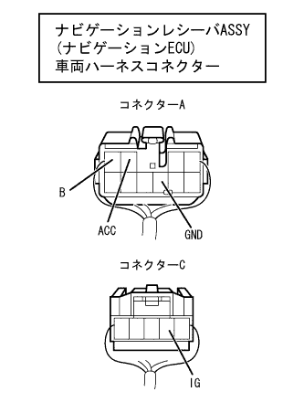

CAN communication system (without VSC) Navigation ECU communication mode |
| Diagnostic item | Symptoms | Suspicated part |
|---|---|---|
| Navigation ECU communication mode |
|
|
| Step 1 | CAN bus disconnection inspection (navigation ECU branch line) |
 |
IG OFF and separate the navigation receiver ASSY (navigation ECU) vehicle harness connector D from the navigation receiver ASSY (navigation ECU).
Use SST (Toyota Electrical Tester) to measure the resistance between D2 (CANH) ← → D3 (CANL) of the navigation receiver ASSY (navigation ECU) vehicle harness connector.
|
| ||||
| OK | |
| Step 2 | Wire harness inspection (B, IG, ACC, GND) |
|  |
Use SST (Toyota Electrical Tester) to inspect the navigation receiver ASSY (navigation ECU) vehicle harness connector A and C terminals ← → body earth.
| Measuring terminal | Measurement conditions | standard |
|---|---|---|
| A3 (ACC) ← → Body Earth | ACC ON | 10-14V |
| A4 (B) ← → Body Earth | Always | 10-14V |
| A7 (GND) ← → Body Earth | Always | There is an conductor |
| C2 (IG) ← → Body Earth | IG ON | 10-14V |
|
| ||||
| OK | ||
| ||